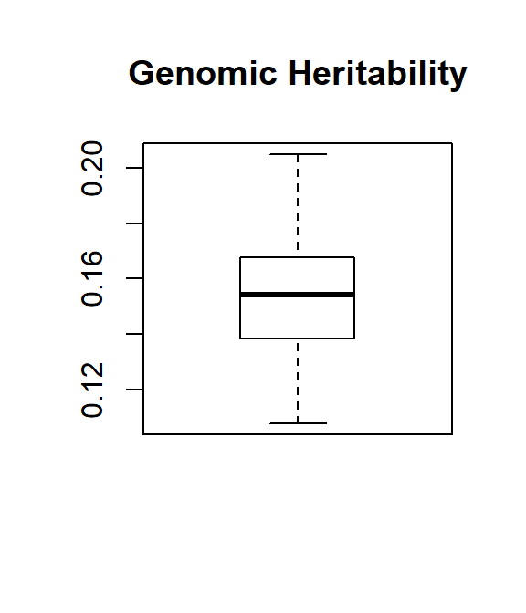
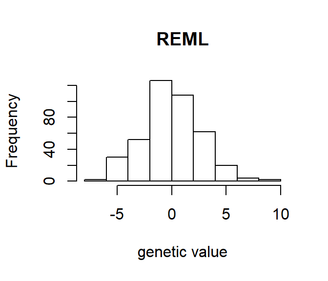

GBLUP and cross validation
Izel Fourie Sørensen
02 November, 2018
Source:vignettes/GBLUP_cross_validation.Rmd
GBLUP_cross_validation.RmdHere we show how to perform a GBLUP analysis and cross validation using the greml function in the qgg package. This involves estimating variance components with restricted maximum likelihood estimation (REML) in the training set and prediction using genomic best linear unbiased prediction (GBLUP) in the validation set. This will be illustrated on the “starvation resistance” phenotype available from the Drosophila genetic reference panel (DGRP).
To perform a GBLUP analysis the following input data is essential.
- \(y\): vector of phenotype
- \(X\): design matrix for covariables
- \(W\): centered and scaled genotype matrix
- \(G\): genomic relationship matrix
This script includes the following steps for performing a GBLUP analysis and cross validation: 1) load and prepare data for GBLUP analysis, 2) restricted maximum likelihood (REML) analyses for estimating variance components, and 3) REML analyses and cross validation.
1. Load and prepare data for GBLUP analysis
#library(devtools)
#install_github("psoerensen/qgg")
library(qgg)## Warning: package 'regress' was built under R version 3.5.1## Warning: package 'data.table' was built under R version 3.5.1Load phenotype and co-variable data
load(file = "./phenotypes/starv_inv_wo.Rdata")
dim(starv)## [1] 406 20head(starv)## L sex y In2Lt In2RNS In2RY1 In2RY2 In2RY3 In2RY4 In2RY5 In2RY6
## 1 100 M 49.28000 INV/ST ST ST ST ST ST ST ST
## 2 101 M 47.20000 INV/ST ST ST ST ST ST ST ST
## 3 105 M 51.04000 ST ST ST ST ST ST ST ST
## 4 109 M 44.96000 INV/ST ST ST ST ST ST ST ST
## 5 129 M 33.08475 ST ST ST ST ST ST ST ST
## 6 136 M 63.04000 ST ST ST ST ST ST ST ST
## In2RY7 In3LP In3LM In3LY In3RP In3RK In3RMo In3RC wo
## 1 ST ST ST ST ST INV ST ST y
## 2 ST ST ST ST ST ST ST ST n
## 3 ST ST ST ST ST INV ST ST n
## 4 ST ST ST ST ST ST ST ST n
## 5 ST ST ST ST ST ST ST ST n
## 6 ST INV/ST ST ST ST INV/ST ST ST yCreate a vector of the starvation resistance phenotype, \(\mathbf{y}\).
data <- starv
y <- data$yPrepare the design matrix \(\mathbf{X}\) for the covariables. fm is the formula used for including relevant variables in the model in order to construct a design matrix.
fm <- y ~ wo +In2Lt + In2RNS + In3RP + In3RK + In3RMo
X <- model.matrix(fm, data=data)
dim(X)## [1] 406 12X[1:5,]## (Intercept) woy In2LtINV/ST In2LtST In2RNSINV/ST In2RNSST In3RPINV/ST
## 1 1 1 1 0 0 1 0
## 2 1 0 1 0 0 1 0
## 3 1 0 0 1 0 1 0
## 4 1 0 1 0 0 1 0
## 5 1 0 0 1 0 1 0
## In3RPST In3RKINV/ST In3RKST In3RMoINV/ST In3RMoST
## 1 1 0 0 0 1
## 2 1 0 1 0 1
## 3 1 0 0 0 1
## 4 1 0 1 0 1
## 5 1 0 1 0 1Load centered and scaled genotype matrix \(\mathbf{W}\)
load(file= "./genotypes/dgrp2_W2.Rdata")
dim(W)## [1] 205 1725755W[1:5,1:5]## 2L_5317 2L_5372 2L_5390 2L_5403 2L_5465
## 21 -0.2486289 -0.6646914 1.2122772 -0.4059216 -0.4007831
## 26 -0.2486289 -0.6646914 -0.8200699 -0.4059216 -0.4007831
## 28 -0.2486289 -0.6646914 1.2122772 -0.4059216 -0.4007831
## 31 4.0006648 -0.6646914 -0.8200699 -0.4059216 -0.4007831
## 32 -0.2486289 -0.6646914 -0.8200699 -0.4059216 -0.4007831Compute \(G\) from \(W\)
The additive genomic relationship matrix \(\mathbf{G}\) (VanRaden PM. 2008. J Dairy Sci. 91:4414-4423) is constructed using all genetic markers as follows: \(\mathbf{G=WW}'/m\), where \(\mathbf{W}\) is the centered and scaled genotype matrix, and \(m\) is the total number of markers.
L <- data$L
G <- grm(W=W)
G <- G[L,L] # this ensures that row id's in G corresponds to row id's in data, there is male and female data for each line.2. Restricted maximum likelihood (REML) analyses
Behind the scenes of the greml function:
REML analyses are used for estimating the variance components, \(\sigma_{g}^2\) and \(\sigma_{e}^2\) for the random effects in the linear mixed model: \[\mathbf{y = {X}b + {Z}g + e}\]
where \(\mathbf{y}\) is the vector of phenotypic observations, \(\mathbf{X}\) and \(\mathbf{Z}\) are design matrices for the fixed and random effects, \(\mathbf{b}\) is a vector of fixed effects, \(\mathbf{g}\) is the vector of genomic values captured by all genetic markers, and \(\mathbf{e}\) is the vector of residuals. The random genomic values and the residuals were assumed to be independent normally distributed values described as follows: \(\mathbf{g} \sim N(0,\mathbf{G}\sigma_g^2 )\) and \(\mathbf{e} \sim N(0,\mathbf{I}\sigma_e^2)\). Thus, we assume that the observed phenotypes \(\mathbf{y} \sim N(\mathbf{Xb,V})\) where \(\mathbf{V}=\mathbf{ZGZ}'\sigma_g^2+\mathbf{I}\sigma_e^2\).
Here we predict the genetic value based on the phenotype observed in the whole study population:
\[\mathbf{\hat{g}} = \hat\sigma_g^2\mathbf{GZ}'{\hat{\mathbf{V}}}^{-1}(\mathbf{y-X\hat{b}}) \]
The phenotype is predicted as:
\[\mathbf{\hat{y} = X\hat{b} + Z\hat{g}}\]
The greml function goes through a number of iterations before convergence (i.e., the change in parameters between consecutive rounds become smaller than a specified threshold, see “tol” argument in the greml help page). In this example each iteration returns values for the variance components \(\sigma_{g}^2\) (third column) and \(\sigma_{e}^2\) (fourth column).
The greml function returns a list structure that includes estimates of the fixed effects (\(\mathbf{b}\)), random effects (\(\mathbf{g}\)) and residual effects (\(\mathbf{e}\)). Other values in the list are described on the greml help page.
fitG <- greml(y=y, X=X, GRM=list(G=G), verbose = TRUE)## [1] "Iteration:" "1" "Theta:" "6.5" "6.64"
## [1] "Iteration:" "2" "Theta:" "12.2" "13"
## [1] "Iteration:" "3" "Theta:" "21.51" "24.88"
## [1] "Iteration:" "4" "Theta:" "33.69" "45.66"
## [1] "Iteration:" "5" "Theta:" "42.78" "77.52"
## [1] "Iteration:" "6" "Theta:" "40.09" "115.14"
## [1] "Iteration:" "7" "Theta:" "30.91" "141.89"
## [1] "Iteration:" "8" "Theta:" "27.73" "149.24"
## [1] "Iteration:" "9" "Theta:" "27.62" "149.58"
## [1] "Iteration:" "10" "Theta:" "27.62" "149.58"
## [1] "Iteration:" "11" "Theta:" "27.62" "149.58"
## [1] "Converged at Iteration:" "12"
## [3] "Theta:" "27.62"
## [5] "149.58"3. REML analyses and cross validation
The genetic value is predicted based on the genomic relationship between the training and validation population:
\[ \mathbf{\hat{g}}^v = \hat\sigma_g^2\mathbf{G}^{vt}\mathbf{Z'{\hat{V}_t}}^{-1}(\mathbf{y}_t-\mathbf{X}_t\hat{\mathbf{b}_t}) \] Where the genomic relationship matrix \[ \mathbf{G} = \left(\begin{array}{cc} \mathbf{G}^{vv} & \mathbf{G}^{vt}\\ \mathbf{G}^{vt} & \mathbf{G}^{tt} \end{array} \right)\]
is partitioned according to relationships between the individuals in the training (\(t\)) data \(\mathbf{G}^{tt}\), between the individuals in the validation (\(v\)) data \(\mathbf{G}^{vv}\) and between the individuals in the training and validation data \(\mathbf{G}^{vt}\). Thus the total genomic predisposition is predicted using the estimated variance components (\(\sigma_g^2\) and \(\sigma_e^2\)) in the training data. The right-most term, \((\mathbf{y}_t-\mathbf{X}_t\hat{\mathbf{b}_t})\), constitutes the phenotypes corrected for fixed effects for the individuals in the training data. The inverse term \(\hat{\mathbf{V}}_t^{-1}\) is essentially the variance-covariance structure for the corrected phenotypes. These two terms multiplied together are the standardized and corrected phenotypes for the individuals in the training data, which are projected onto the total genetic covariance structure between the training and the validation data.
Variance components for the phenotype observed in the training set are estimated. Based on the estimated variance components, the phenotype in the validation set is predicted as: \[\hat{\mathbf{y}_v} = \mathbf{X}_v\hat{\mathbf{b}_t} + \mathbf{Z\hat{g}}_v + \mathbf{e}\]
50 validation sets are created by randomly sampling 30 values from 1 - 406 (the length of \(\mathbf{y}\)), and repeating this sampling 50 times. The validation sets are saved in the validate matrix. This matrix specifies the rows of the data used in the GREML analyses.
n <- length(y)
validate <- replicate(50, sample(1:n, 30))
cvG <- greml(y = y, X = X, GRM = list(G=G), validate = validate)
str(cvG)## List of 4
## $ accuracy:'data.frame': 50 obs. of 7 variables:
## ..$ Corr : num [1:50] 0.294 0.304 0.16 0.598 0.048 0.176 0.149 0.205 0.393 -0.066 ...
## ..$ R2 : num [1:50] 0.086 0.092 0.026 0.357 0.002 0.031 0.022 0.042 0.154 0.004 ...
## ..$ Nagel R2 : num [1:50] NA NA NA NA NA NA NA NA NA NA ...
## ..$ AUC : num [1:50] NA NA NA NA NA NA NA NA NA NA ...
## ..$ intercept: num [1:50] 49.1 49.4 50.6 47.5 53.5 ...
## ..$ slope : num [1:50] 0.082 0.091 0.024 0.142 0.019 0.04 0.042 0.051 0.113 -0.016 ...
## ..$ MSPE : num [1:50] 148 142 173 164 170 ...
## $ theta :'data.frame': 50 obs. of 2 variables:
## ..$ G: num [1:50] 24.5 29.1 24.7 26.7 36.1 ...
## ..$ E: num [1:50] 154 151 152 151 144 ...
## $ yobs : num [1:1500] 52.7 38.7 50 43.7 91.2 ...
## $ ypred : num [1:1500] 53.7 48.3 49.7 51 58.8 ...cvG$accuracy[1:5,]## Corr R2 Nagel R2 AUC intercept slope MSPE
## 1 0.294 0.086 NA NA 49.057 0.082 148.003
## 2 0.304 0.092 NA NA 49.449 0.091 141.987
## 3 0.160 0.026 NA NA 50.588 0.024 173.350
## 4 0.598 0.357 NA NA 47.495 0.142 164.279
## 5 0.048 0.002 NA NA 53.529 0.019 170.110cvG$theta[1:5,]## G E
## 1 24.549 154.421
## 2 29.053 151.082
## 3 24.712 152.325
## 4 26.678 151.384
## 5 36.097 144.242Output of the GREML cross validation analysis
The output includes statistics that quantify the model’s predictive ability as assessed by regressing the observed phenotype against the predicted phenotype for the validation data set: \(y = intercept + \hat{y} slope + e\)
Explanation of the values in cvG$accuracy:
| Value | Description | |
|---|---|---|
| Corr | Correlation between the predicted and observed phenotypic value. Averaging the list of 50 correlations yields the predictive ability | |
| R2 | \(R^2\), proportion of the total variance that is explained by the GBLUP model | |
| Nagel R2 | Nagelkerke’s \(R\) | |
| AUC | Area Under the ROC Curve | |
| intercept | The y-axis intercept for the regression of \(\mathbf{y}\) unto \(\hat{\mathbf{y}}\) | |
| slope | Slope for the regression of \(\mathbf{y}\) unto \(\hat{\mathbf{y}}\) | |
| MSPE | mean squared prediction error = \(\frac{1}{n_v}\sum_{i=1}^{n_v}({\mathbf{y}_i - \hat{\mathbf{y}_i})^2}\), \(n_v\) = number of observations in validation set |
Explanation of the values in cvG$theta:
| Value | Description | |
|---|---|---|
| G | Estimated variance component, \(\hat\sigma_{g}^2\) | |
| E | Estimated variance component, \(\hat\sigma_{e}^2\) |
Prepare data frame of results
accuMeans <- colMeans(cvG$accuracy)
thetaMeans <- colMeans(cvG$theta)
accuSEM <- apply(cvG$accuracy, 2, function(x){sd(x)/sqrt(50)})
thetaSEM <- apply(cvG$theta, 2, function(x){sd(x)/sqrt(50)})
stat <- c("mean","sem")
results1 <- data.frame(stat, rbind(accuMeans, accuSEM))
results2 <- data.frame(stat, rbind(thetaMeans, thetaSEM))
results <- cbind(results1,results2)
results## stat Corr R2 Nagel.R2 AUC intercept slope
## accuMeans mean 0.19306000 0.07146000 NA NA 50.403740 0.054440000
## accuSEM sem 0.02645399 0.01045399 NA NA 0.436142 0.008085722
## MSPE stat G E
## accuMeans 171.455500 mean 27.3324200 150.3625000
## accuSEM 6.491496 sem 0.6364689 0.6459845Heritability (\(\hat{h^2}\))
h2fm <- cvG$theta$G/(cvG$theta$G+cvG$theta$E)
boxplot(h2fm, main = "Genomic Heritability")
Histogram of genetic values
hist(fitG$g, xlab = "genetic value", main = "REML")
Histogram of phenotype
hist(y, xlab = "hours", main = "Starvation Resistance")